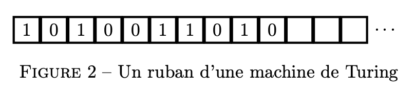
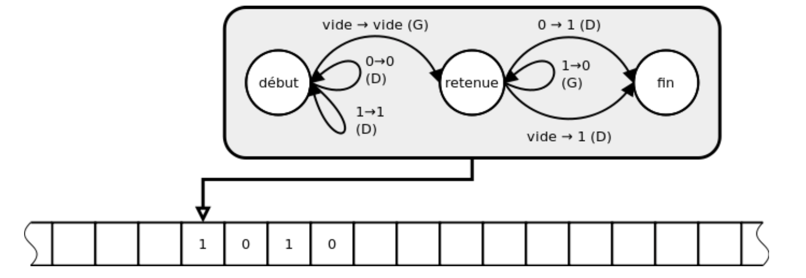
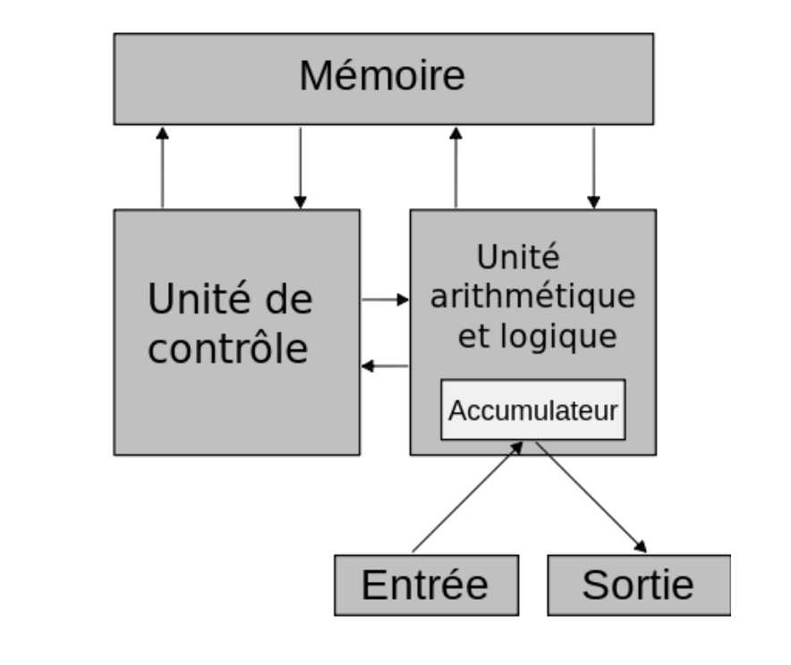
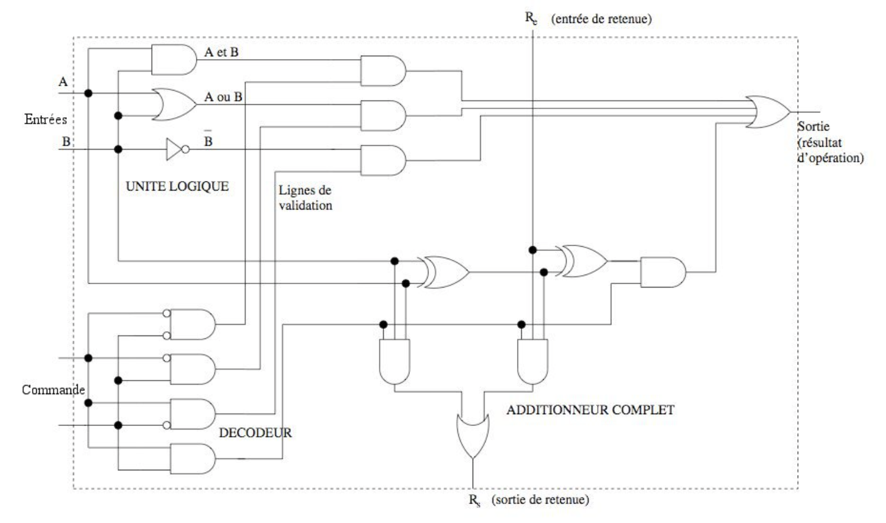
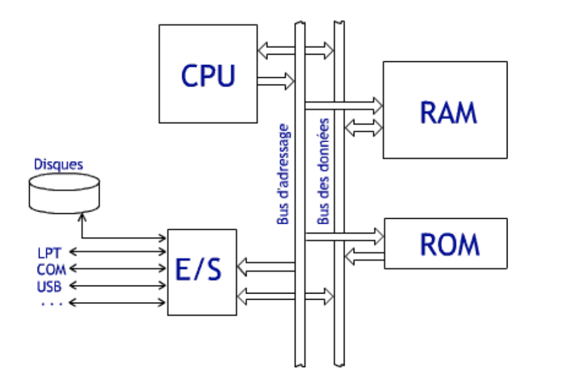

Architecture des ordinateurs & représentation des nombres
Dans ce premier chapitre, nous précisons ce qu'on peut désigner sous le terme d'ordinateur, du modèle théorique de Turing au modèle concret de Von Neumann — puis nous descendons jusqu'aux 0 et aux 1 pour voir comment nombres entiers et nombres à virgule y sont représentés.
1. Qu'est-ce qu'un ordinateur ? Une tâche complexe
Tenter de définir un ordinateur, au sens large incluant tablettes et smartphones, peut sembler simple à première vue. On pourrait proposer trois critères de base :
- Il reçoit des informations (de l'utilisateur ou d'un réseau) ;
- Il émet des informations (via un réseau ou des périphériques) ;
- Il nécessite une source d'énergie pour fonctionner.
Cependant, cette définition s'avère insuffisante. De nombreux appareils remplissent ces critères sans être considérés comme des ordinateurs : un réfrigérateur avec ses capteurs et signaux, un interrupteur sensible à la lumière, le système ABS d'une voiture, les systèmes électroniques embarqués en général.
La différence clé réside dans la polyvalence : un ordinateur peut être reprogrammé pour effectuer diverses tâches, contrairement aux systèmes à fonction unique. Cette difficulté de définition rejoint une question fondamentale du XXᵉ siècle : qu'est-ce qu'un calcul ?
2. Turing et ses machines
Les années 1930 marquent une avancée majeure dans la compréhension de la calculabilité grâce aux travaux de Kleene, Church, Turing et Post. Turing introduit un concept novateur : une machine capable d'effectuer des calculs de manière entièrement automatique. Cette machine de Turing est équipée de :
- un ruban infini divisé en cases, sur lequel elle peut lire et écrire des données ;
- une tête de lecture qui se déplace le long du ruban ;
- un ensemble fini d'états : quand la machine lit un symbole, elle réagit en fonction de son état actuel et du symbole lu, en changeant d'état, en modifiant le symbole sur le ruban et en déplaçant la tête d'un cran à droite ou à gauche.

Donnons une brève description d'une machine de Turing testant si un nombre naturel $n$ écrit en binaire est divisible par 3. Sur le ruban d'entrée se trouve le mot écrit en binaire de gauche à droite, les bits de poids forts au début. La machine doit écrire à la suite du nombre le symbole « V » ou « F » suivant si le nombre est divisible par 3 ou non. On imagine une machine à 4 états :
- 3 états correspondant à la congruence modulo 3 de la portion du nombre lue jusqu'ici, notés 0, 1, 2 ;
- un état supplémentaire (final) indiquant que le calcul est fini.
Le tableau suivant donne la congruence modulo 3 de $2a$ et $2a+1$ en fonction de celle de $a$ :
| $a$ | 0 | 1 | 2 |
|---|---|---|---|
| $2a$ | 0 | 2 | 1 |
| $2a+1$ | 1 | 0 | 2 |
Si la portion des bits lue jusque-là représente $a$ en binaire, lire un 0 mène à la représentation de $2a$, et lire un 1 mène à celle de $2a+1$. En commençant à l'état 0, la lecture successive des bits du nombre 666 en binaire fait passer successivement par les états 1, 2, 2, 1, 2, 2, 2, 1, 0, 0 — on écrit donc « V » car on termine à l'état 0 : 666 est bien divisible par 3.
Dans l'exemple précédent, on a fait essentiellement de la lecture, mais on peut aussi calculer : pour additionner 1 au nombre naturel écrit en binaire sur le ruban (bits de poids forts au début), il suffit de se déplacer jusqu'à la fin du mot (caractérisée par une case vide), de revenir d'un cran à gauche, puis de remplacer les 1 par des 0 en se déplaçant vers la gauche, jusqu'à retomber sur un 0 ou une case vide, qu'on transforme en 1.

Comme le nombre d'états d'une machine de Turing est fini, sa description peut elle-même être encodée en binaire et écrite sur un ruban. Turing montre qu'il existe une machine de Turing universelle, capable de prendre sur un ruban la description de n'importe quelle machine de Turing et de simuler son exécution. Un ordinateur est donc la réalisation concrète d'une telle machine universelle : il exécute un algorithme pour peu qu'il soit traduit dans un langage de programmation adéquat.
3. Prémices aux ordinateurs et modèle de Von Neumann
La première réalisation concrète d'une machine de Turing date de 1941 : c'est le Z3 allemand, électromécanique. La première réalisation entièrement électronique est l'ENIAC (1943), conçu par John William Mauchly et John Eckert, pleinement opérationnel en 1946.

Von Neumann intègre l'équipe en 1944 et publie en 1945 un rapport sur la conception de l'EDVAC, décrivant un schéma d'architecture organisé en trois éléments (unité arithmétique, unité de commande, mémoire contenant programme et données). Ce rapport décrit aussi des principes de réalisation pour ces éléments — si cet aspect a partiellement vieilli avec la technologie de l'époque, le modèle d'architecture, qui marque une transition profonde avec les pratiques antérieures, reste d'une étonnante actualité.

Ce modèle, auquel reste attaché son nom, comporte schématiquement quatre composants principaux :
- le processeur, qui se décompose en une unité de commande et une unité arithmétique et logique ;
- la mémoire, qui contient des instructions et des données ;
- les périphériques d'entrée-sortie, qui permettent la communication avec l'utilisateur (clavier, souris, écran...) ;
- le bus, canal de communication entre la mémoire, le processeur et les périphériques.
La première innovation est la séparation nette entre l'unité de commande, chargée d'organiser le flot des instructions, et l'unité arithmétique, chargée de leur exécution. La seconde innovation est l'idée du programme enregistré : fini les rubans et cartes à trous — instructions et données sont enregistrées dans la mémoire selon un codage conventionnel. Un compteur ordinal (program counter) contient l'adresse de l'instruction en cours ; il est automatiquement incrémenté après exécution, et explicitement modifié par les instructions de branchement (if, goto, jump...).
4. Le rôle de chaque élément
Le processeur. Le CPU est le cerveau de l'ordinateur : il donne des ordres aux périphériques et à la mémoire, et exécute le programme. Il dispose d'une toute petite mémoire — quelques dizaines ou centaines de mots de 64 bits — appelée registres. Le registre de données contient les données transitant avec l'extérieur ; l'accumulateur contient les opérandes ou résultats de l'unité arithmétique et logique, qui réalise additions, multiplications, soustractions, divisions, ainsi que conjonction, disjonction et négation logiques.

L'unité de contrôle accède à la mémoire via le bus pour lire ou écrire une case mémoire, mais ne contient pas elle-même le programme : les instructions sont codées sous forme d'une suite de bits stockée en mémoire, exécutées dans l'ordre sauf instructions de saut :
- une instruction de saut conditionnel modifie l'ordre si une condition est vérifiée ;
- une instruction de saut inconditionnel modifie l'ordre sans condition.
Les instructions for et while (qui n'existent pas en langage machine) sont traduites par plusieurs instructions de saut conditionnelles et inconditionnelles.
La mémoire. Suite de bits, organisés en octets (paquets de 8) puis en mots mémoire de 64 bits. Un mot peut représenter une instruction, un entier... la signification dépend de l'utilisation qu'on en fait. La mémoire ne réalise aucune opération : chaque mot possède une adresse, attribuée de manière aléatoire — d'où le nom Random Access Memory (RAM).
Les périphériques. Mémoire supplémentaire dans laquelle le processeur écrit pour donner des ordres (afficher une couleur sur un pixel) ou lit pour recevoir des informations (touche tapée sur un clavier). Ce sont les éléments physiques qui permettent d'interagir avec le monde extérieur — en entrée (clavier, souris) ou en sortie (écran, imprimante).
5. Avantages et inconvénients
L'architecture de Von Neumann permet une grande souplesse car on peut stocker virtuellement tout type de structure en mémoire — données ou programmes. Elle possède cependant trois inconvénients :
- Exécution monotâche : les instructions sont exécutées séquentiellement, on ne peut donc faire qu'une seule chose à la fois ;
- Le bus : les processeurs sont devenus si rapides qu'ils passent beaucoup de temps à attendre le transfert des données ;
- Faible robustesse : données et programmes étant dans la même mémoire, un bug provoquant une écriture non désirée peut compromettre toute la machine.
6. Ordres de grandeur
Il est important de connaître grossièrement ce qu'il est possible de calculer et de stocker : une fois estimées les ressources en temps et en mémoire d'un algorithme, on peut savoir s'il s'exécutera sans problème ou s'il manquera de temps ou de mémoire.

| Ressource | Ordre de grandeur actuel | Remarque |
|---|---|---|
| Fréquence processeur | quelques GHz → $10^9$ opérations élémentaires / seconde | En pratique, avec un langage haut niveau comme Python, on retient plutôt $10^7$ opérations « élémentaires » par seconde. |
| Mémoire vive (RAM) | de l'ordre du Go (giga-octet) | Au-delà, on tombe dans le swap : usage du disque dur, à l'accès bien plus lent. |
| Mémoire de masse | de l'ordre du To (téra-octet) | Peu rapide, mais permet un grand volume de stockage. |
7. Représentation des entiers naturels
Les ordinateurs et les programmes mémorisent, transmettent et transforment des données aussi variées que des nombres, des textes, des images, des sons. Pourtant, à petite échelle, ils ne manipulent que des objets bien plus simples : des 0 et des 1.
Représentation par des booléens
La mémoire des ordinateurs est constituée d'une multitude de petits circuits électroniques qui, chacun, ne peuvent être que dans deux états : sous tension ou hors tension. On a décidé de les appeler 0 et 1 — une telle valeur est dite booléenne, ou bit (binary digit). L'état d'un circuit composé de plusieurs bits est représenté par une suite finie de 0 et de 1, qu'on appelle un mot. Par exemple, le mot 100 décrit l'état d'un circuit de trois bits, respectivement 1, 0 et 0.
La numération à position et les bases
Depuis le Moyen-Âge, on écrit les entiers naturels en notation décimale à position : pour écrire $n$, on imagine $n$ objets, groupés par paquets de dix, puis en paquets de dix paquets, etc. Le choix de faire des paquets de dix est conventionnel — on aurait pu choisir deux, cinq, douze, seize, etc. : on parle alors de numération en base $k$.
Algorithme — conversion d'un nombre de base 10 vers la base k
Entrée : n ≥ 0, k > 1 (entiers)
i ← 0
tant que n ≠ 0 :
a_i ← n mod k # reste de la division euclidienne
n ← n // k # quotient de la division euclidienne
i ← i + 1
Sortie : la représentation a_(i-1)...a_1 a_0 de n en base k
La base deux
La mémoire des ordinateurs étant constituée de circuits à deux états, les ordinateurs comptent naturellement en base deux. Par exemple, le nombre treize s'écrit $1101$ : de droite à gauche, 1 unité, 0 « deuzaine », 1 « quatraine » et 1 « huitaine ». L'écriture d'un entier en binaire est en moyenne 3,2 fois plus longue qu'en base dix, mais ne demande que deux chiffres.
Les circuits mémoire sont souvent groupés par huit (les octets), avec des mots de 1, 2, 4 ou 8 octets (8, 16, 32 ou 64 bits), permettant de représenter :
| Taille du mot | Plage représentable |
|---|---|
| 1 octet (8 bits) | 0 à 255 |
| 2 octets (16 bits) | 0 à 65 535 |
| 4 octets (32 bits) | 0 à 4 294 967 295 |
| 8 octets (64 bits) | 0 à 18 446 744 073 709 551 615 |
On appelle ces représentations des entiers non signés. En Python, aucun type ne donne directement accès à cette représentation : on ne manipule que des entiers relatifs.
8. Représentation des entiers relatifs
Notation en complément à deux
Une première idée consisterait à réserver un bit pour le signe et à utiliser les autres pour la valeur absolue — mais cette méthode a des inconvénients, notamment l'existence de deux zéros (positif et négatif).
On applique donc une autre méthode : représenter un entier relatif par un entier naturel. Avec des mots de $n$ bits, on représente un entier relatif $x$ positif ou nul comme l'entier naturel $x$ (compris entre 0 et $2^{n-1}-1$), et un entier relatif $x$ strictement négatif comme l'entier naturel $x + 2^n$ (compris entre $2^{n-1}$ et $2^n - 1$).
Avec des mots de 16 bits, on représente ainsi les entiers relatifs de −32 768 à 32 767. L'entier relatif −1 est représenté comme l'entier naturel 65 535, soit le mot 1111 1111 1111 1111. Il reste facile de déterminer le signe : un entier positif ou nul a son premier bit à 0, un entier strictement négatif a son premier bit à 1.
9. Dépassements de capacité
Puisque les nombres représentables sont limités, que se passe-t-il aux limites ? En représentation sur 32 bits :
>>> a = 260 >>> a*a 67600 >>> a*a*a 17576000 >>> a*a*a*a 4569760000
Le dernier résultat, 4 569 760 000, nécessite 33 bits. En représentation sur 32 bits, le bit le plus à gauche est perdu : on ne mémorise que 274 792 704, qui n'est évidemment pas le résultat attendu. On appelle ce phénomène dépassement arithmétique (overflow).
En Python, la seule limite pour représenter des entiers est la mémoire disponible sur la machine : les dépassements ci-dessus ne s'y produisent donc pas. Pour représenter des entiers de taille arbitraire, l'implémentation de référence de Python découpe la représentation binaire par paquets de 15 bits (machines 32 bits) ou 30 bits (machines 64 bits), et stocke les « chiffres » obtenus dans un tableau, associé à une taille dont le signe donne le signe du nombre.
10. Représentation des nombres à virgule
La notation binaire permet aussi de représenter des nombres à virgule : les chiffres à droite de la virgule représentent des demis, des quarts, des huitièmes, etc. Mais cette écriture directe ne permet pas de représenter des nombres très grands ou très petits (nombre d'Avogadro, constante de Planck). On utilise donc une notation « scientifique » en base deux, définie par la norme IEEE 754 : un nombre s'écrit $s \cdot m \cdot 2^n$, où $s$ est le signe, $n$ l'exposant (entier relatif) et $m$ la mantisse (comprise entre 1 inclus et 2 exclu).
Sur 64 bits, on utilise 1 bit pour le signe, 11 bits pour l'exposant et 52 bits pour la mantisse :
- Le signe + est représenté par 0, le signe − par 1.
- L'exposant $n$, compris entre −1022 et 1023, est représenté comme l'entier naturel $n+1023$ (entre 1 et 2046). Les valeurs 0 et 2047 sont réservées à des cas exceptionnels.
- La mantisse $m$, comprise entre 1 et 2, a toujours un 1 implicite avant la virgule : on utilise donc les 52 bits pour les 52 chiffres après la virgule, pour une précision réelle de 53 bits.
Dépassements et problèmes de précision
64 bits ne suffisent plus si l'exposant dépasse 1023, ou si l'exposant vaut 1023 avec une mantisse trop grande : on parle de dépassement arithmétique, produisant $+\infty$ ou $-\infty$ plutôt qu'une simple troncature. À l'inverse, un nombre trop proche de 0 (exposant inférieur à −1022) produit un soupassement (underflow) : le résultat est arrondi à zéro, ou une erreur est produite.
11. Les arrondis
Il est rare que le résultat d'un calcul entre deux flottants soit représentable exactement sur 64 bits — même sans calcul, la plupart des nombres décimaux ne le sont pas. Par exemple, 0,4 admet un développement binaire infini périodique : $0{,}011001100110011\ldots$. La norme IEEE 754 impose alors d'arrondir à la valeur représentable la plus proche.
>>> 1 + 2**-54 - 1 0.0 >>> 1 - 1 + 2**-54 5.551115123125783e-17Dans le premier cas, $1 + 2^{-54}$ est arrondi à 1 avant la soustraction ; dans le second, $1-1$ est calculé exactement avant l'addition.
On retiendra qu'il n'est pas possible de savoir avec certitude si le résultat d'un calcul flottant est égal à sa valeur théorique. Un test a == b n'a donc en général pas de sens pour deux flottants : on le remplace par une condition du type abs(a - b) < epsilon, où epsilon est choisi en fonction du problème et de l'ordre de grandeur des erreurs attendues.